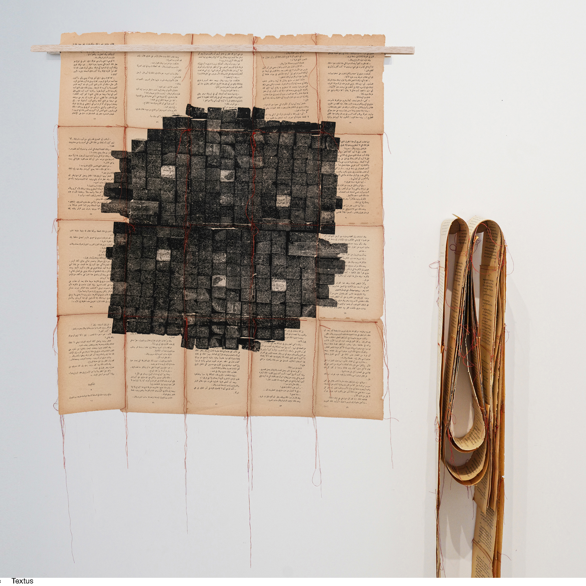
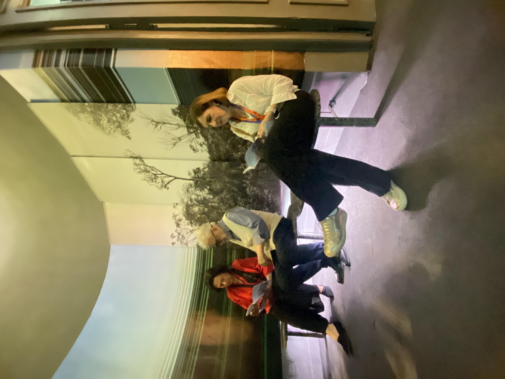
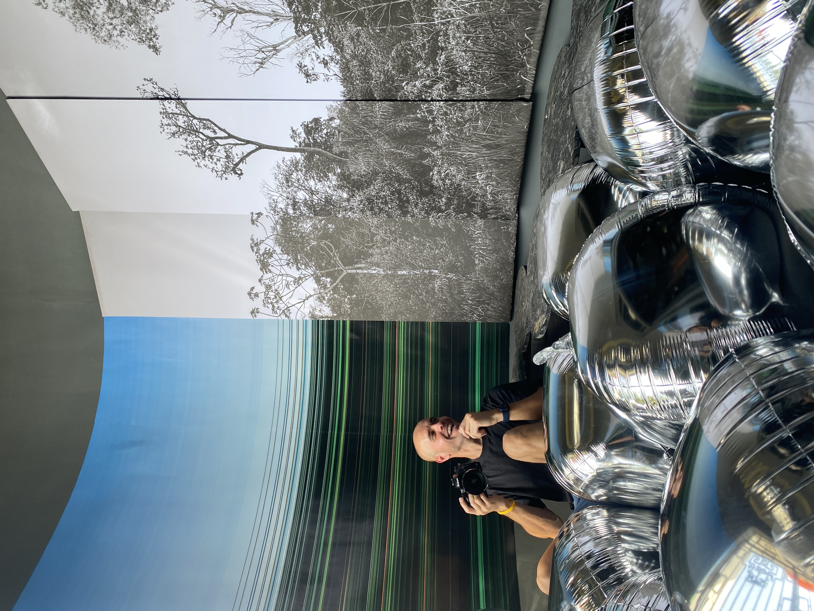

01
Artist statement
About Andrea
Andrea Alkalay is a Buenos Aires–based visual artist working at the intersection of photography, material and environment.
Her expanded photographic practice explores the unstable boundary between what we see and what we know. Through collage, folds, textiles, found materials and installation, the image becomes both an object and a site of inquiry.
02
Selected presentations
Exhibitions
- Unfixed Landscapes, Wounded SystemsSoulangh Cultural Park · Tainan, Taiwan
- Landscape on LandscapeRecoleta Cultural Center · Buenos Aires
- The Rock CycleArtist residency · Al-Balad, Jeddah
- Selected group exhibitionsArgentina · Chile · Slovenia